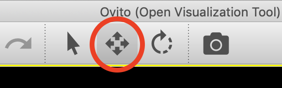
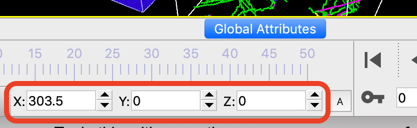

Data import
File source panel
To load a simulation file from your local computer, select from the menu or use the corresponding button in the toolbar.
OVITO detects the format of the file automatically (see list of supported formats).
Compressed files with a .gz suffix can be opened directly if the underlying text-based format is supported by OVITO.
To import files in a custom format, you can write your own file reader in Python pro.
After import, the dataset appears in the 3d viewport(s) as a visual object and as data source in the pipeline editor (see screenshot on the right).
The External file panel is displayed below the pipeline editor. It contains tool buttons for reloading the imported data file in case it was changed outside of OVITO, or for picking a different file as the source of the data pipeline. Replacing the imported file is useful if you have set up a complex data analysis pipeline and would like to reuse it on a different simulation.
Command line usage
When launching OVITO from the terminal, you can directly specify the file(s) to load. This works both for local and remote files:
ovito /path/filename
ovito sftp://hostname/path/filename
ovito https://www.website.org/path/filename
Importing several files at once by specifying multiple paths is possible. If they all have the same file format, they will be concatenated into an animatable trajectory. If they have different formats, OVITO will detect whether they represent a pair of topology/trajectory files (see next section). Otherwise, they will be inserted as separate objects into the scene pro.
Simulation trajectories
OVITO can load simulation trajectories consisting of a series of snapshots. Various cases are supported by the software:
- A series of separate files:
Whenever you import a new simulation file, OVITO tries to detect if the file is part of a numbered sequence of files with similar names in the same directory. To this end, the last sequence of numeric characters (if any) in the filename you’ve picked is replaced with the wildcard character
*to derive a search pattern, which will be subsequently used to look up more files in the same directory. For instance, if you open the fileanim1c_5000.dump, OVITO automatically generates the search patternanim1c_*.dumpto find more files (e.g.anim1c_0.dump,anim1c_1000.dump,anim1c_2000.dump, etc) that may be part of the same trajectory. It is possible to manually override the generated search pattern using the edit field highlighted in the screenshot or turn off the automatic discovery of file sequences completely by unchecking the auto-generate box.- File containing multiple trajectory frames:
OVITO automatically detects whether the imported file contains more than one simulation frame and loads all of them as an animation sequence. For some file types, e.g. XYZ and LAMMPS dump, this is indicated by the Contains multiple timesteps checkbox highlighted in the screenshot. Note that OVITO typically keeps only the data of a single frame in memory at a time. Subsequent frames will be loaded into memory only as needed, for example, when you play back the animation or move the time slider.
- A pair of topology and trajectory files:
Some MD simulation codes use separate files for the topology and the trajectory of a molecular structure. The topology file contains the static definition of atoms, bonds, etc. while the trajectory file contains the computed trajectories and other time-dependent data generated in the MD simulation. In such a case you should pick both files in the file selection dialog and import them simultaneously. OVITO recognizes automatically which of the file is the topology file and which one is the trajectory file based on the following table:
Topology format
Trajectory format
LAMMPS data
LAMMPS dump
Gromacs GRO
Gromacs XTC
CASTEP cell
CASTEP md/geom
any other supported format
XYZ
The topology file will be loaded first (e.g. a LAMMPS data file) and a Load trajectory modifier will be inserted into the data pipeline to load the time-dependent atomic positions from the trajectory file (e.g. a LAMMPS dump file). This modifier merges both pieces of information -the static topology and the dynamic trajectory data- into a single animated dataset.
OVITO will display a timeline and a time slider below the viewports if a simulation sequence with more than one frame has been loaded. See the section Parameter and camera animations to learn more about OVITO’s advanced animation capabilities.
Visualizing multiple datasets pro
Side-by-side visualization example
OVITO Pro allows you to insert several objects or datasets into the same three-dimensional scene. You can import and visualize multiple datasets together in one picture as shown in the example on the right. You can also visualize the same dataset in several different ways, either side by side or superimposing different visualization modes. The branched data pipelines feature of OVITO Pro lets you dynamically duplicate the imported dataset and process each clone in a different way.
The simplest way to include multiple datasets in one picture is to invoke the menu function several times and import all datasets into the current scene. When you import the second dataset, OVITO will ask whether to replace the already loaded dataset or not. Select the Add to scene option in order to insert the subsequent datasets as additional objects into the scene.
The pipeline selector widget in OVITO’s toolbar
The pipeline selector widget, located in the top toolbar (see screenshot), lists all datasets and other objects that are part of the current scene. Each imported dataset is associated with its own data pipeline. Thus, you can apply different modifiers to each of them. The data pipeline of the currently selected dataset is the one being displayed and edited in the pipeline editor in the command panel on the right.
Positioning objects in the scene
OVITO Pro places all imported datasets in the same standard position in the scene’s global coordinate system. Thus, multiple datasets will at first appear superimposed in the same spatial location, which may not be what you want.
In order to change this, you can move individual objects around and arrange them in the scene as needed. In the example picture above the second dataset was translated along the x-axis to place it next to the first dataset. Moving entire datasets is done using the Translate tool, which is found in the top toolbar of OVITO:
 {kind=link}
{kind=link}
While the Translate input mode is active, you can drag objects around in the viewports using the mouse. Alternatively, you can enter the desired XYZ position of the active object into the input fields appearing in the status bar. If you want to move only some parts of a dataset instead of the whole dataset, e.g., a group of selected particles, you can do that by inserting the Affine transformation modifier into the data pipeline.